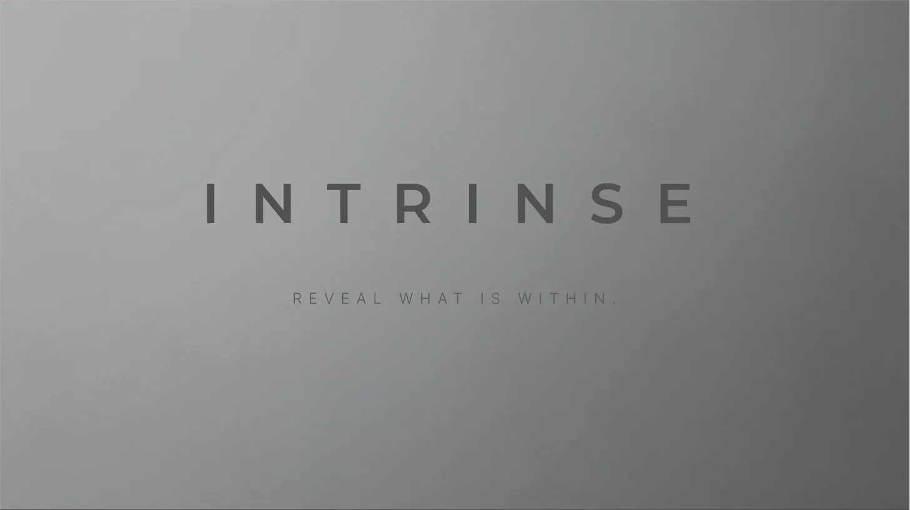

Bewusste Entscheidungen.
Um das Beste zum Vorschein zu bringen.
ENERGY.
Warum brauchen wir Nahrung?
Die Antwort scheint auf den ersten Blick einfach zu sein.
Weil unser Körper Energie braucht.
Das stimmt.
Und doch erzählt diese Antwort nur einen Teil der Geschichte.
Denn Nahrung liefert nicht nur Energie.
Sie liefert die Voraussetzungen dafür, dass unser Körper jeden Tag unzählige Aufgaben erfüllen kann.
Genau dort beginnt ein anderer Blick auf Ernährung.
Leben bedeutet Veränderung.
Wenn wir morgens in den Spiegel schauen, sehen wir meist denselben Menschen wie am Tag zuvor.
Unser Körper erlebt diesen Tag jedoch ganz anders.
Während wir arbeiten, lernen oder schlafen, sterben Zellen ab.
Neue entstehen.
Proteine werden aufgebaut.
Andere wieder abgebaut.
Enzyme werden hergestellt.
Gewebe wird erneuert.
Unser Körper befindet sich nicht gelegentlich im Wandel.
Er lebt davon.
Vielleicht gehört genau das zu seinen faszinierendsten Eigenschaften.
Er ist niemals fertig.
Mehr als Energie.
Vielleicht hilft ein anderes Bild.
Stell dir einen Garten vor.
Ein Garten braucht Sonnenlicht.
Ohne Licht wächst keine Pflanze.
Trotzdem würde niemand sagen, ein Garten bestehe aus Sonnenlicht.
Er braucht Wasser.
Nährstoffe.
Erde.
Mikroorganismen.
Zeit.
Und unzählige Prozesse, die meist im Verborgenen stattfinden.
Mit unserem Körper verhält es sich erstaunlich ähnlich.
Energie ist notwendig.
Leben entsteht dadurch noch nicht.
Unser Körper arbeitet ununterbrochen.
Während du diese Zeilen liest, geschieht in deinem Körper mehr, als wir bewusst wahrnehmen.
Milliarden von Zellen arbeiten gleichzeitig.
Manche erneuern Gewebe.
Andere reparieren kleine Schäden.
Wieder andere stellen Moleküle her, die wenige Augenblicke später bereits wieder gebraucht werden.
Nach außen wirkt unser Körper ruhig.
Im Inneren herrscht eine erstaunliche Betriebsamkeit.
Vielleicht nehmen wir sie gerade deshalb so selten wahr.
Nahrung schafft Möglichkeiten.
Häufig sprechen wir über Lebensmittel, als hätten sie eine einzige Aufgabe.
Sie liefern Energie.
Oder Protein.
Oder Vitamine.
Unser Körper betrachtet Nahrung jedoch nicht in solchen Kategorien.
Er fragt nicht:
„Wie viele Kalorien enthält diese Mahlzeit?“
Er fragt vielmehr:
„Was kann ich daraus machen?“
Dieser kleine Unterschied verändert den Blick auf Ernährung.
Nahrung ist für unseren Körper nicht einfach Treibstoff.
Sie ist Ausgangspunkt.
Sie liefert die Bausteine und die Energie, aus denen unser Körper jeden Tag Neues entstehen lässt.
Die Sprache der Biologie.
In der Ernährungswissenschaft begegnen uns viele Begriffe.
Proteine.
Fette.
Kohlenhydrate.
Vitamine.
Mineralstoffe.
Sie helfen uns, Nahrung zu beschreiben.
Unser Körper kennt diese Begriffe allerdings nicht.
Er arbeitet mit Molekülen.
Mit Signalen.
Mit Konzentrationen.
Mit Bedarf.
Vielleicht erklärt genau das, warum Ernährung so selten durch einfache Regeln verstanden werden kann.
Biologie ist kein starres System.
Sie ist lebendig.
Eine andere Frage.
Vielleicht lohnt es sich deshalb, Ernährung nicht nur danach zu beurteilen, was wir essen.
Sondern auch danach, was unser Körper daraus entstehen lässt.
Denn genau dort entscheidet sich der eigentliche Wert unserer Nahrung.
Nicht auf dem Teller.
Sondern in uns.
Und woraus baut sich unser Körper?
Wenn unser Körper sich ständig erneuert, stellt sich fast automatisch die nächste Frage.
Welche Bausteine verwendet er dafür eigentlich?
Genau dort beginnt das nächste Kapitel.
Bausteine — Warum Protein weit mehr ist als Muskelaufbau.
Im ersten Kapitel haben wir gesehen, dass unser Körper sich ständig verändert.
Während wir leben, wird aufgebaut.
Erneuert.
Repariert.
Angepasst.
Fast automatisch entsteht daraus die nächste Frage.
Woraus baut unser Körper eigentlich all das auf?
Die Antwort beginnt bei erstaunlich kleinen Bausteinen.
Ein Wort mit Geschichte.
Kaum ein Begriff begegnet uns im Zusammenhang mit Ernährung so häufig wie Protein.
Auf Verpackungen.
In Werbeanzeigen.
Im Fitnessstudio.
Man könnte fast meinen, Protein sei eine moderne Entdeckung.
Tatsächlich begleitet uns dieser Begriff schon seit dem 19. Jahrhundert.
Er leitet sich vom griechischen Wort proteios ab.
Es bedeutet sinngemäß:
„Von erster Bedeutung.“
Eine bemerkenswert treffende Bezeichnung.
Nicht weil Protein wichtiger wäre als alle anderen Nährstoffe.
Sondern weil Wissenschaftler schon früh erkannten, welche grundlegende Rolle diese Stoffgruppe für das Leben spielt.
Mehr als Muskeln.
Fragt man nach Protein, denken viele Menschen zuerst an Muskelaufbau.
Das ist verständlich.
Muskeln bestehen zu einem großen Teil aus Proteinen.
Damit endet ihre Aufgabe jedoch längst nicht.
Proteine finden sich nahezu überall in unserem Körper.
In unserer Haut.
In unseren Haaren.
In Enzymen.
In Transportmolekülen.
In Antikörpern.
Und in unzähligen weiteren Strukturen, die wir im Alltag kaum wahrnehmen.
Vielleicht wird genau hier deutlich, warum Protein weit mehr ist als ein Thema für Sportler.
Es gehört zu den grundlegenden Bausteinen unseres Körpers.
Aus wenigen Bausteinen entsteht erstaunliche Vielfalt.
Vielleicht hilft auch hier ein anderes Bild.
Stell dir das Alphabet vor.
Es besteht aus nur wenigen Buchstaben.
Und doch entstehen daraus Gedichte.
Romane.
Wissenschaftliche Arbeiten.
Oder dieser Text.
Nicht die Anzahl der Buchstaben entscheidet.
Sondern ihre Reihenfolge.
Mit Proteinen verhält es sich erstaunlich ähnlich.
Sie bestehen aus Aminosäuren.
Aus vergleichsweise wenigen Bausteinen entsteht eine beeindruckende Vielfalt biologischer Strukturen.
Vielleicht gehört genau das zu den elegantesten Ideen der Natur.
Aminosäuren.
Proteine bestehen aus einzelnen Aminosäuren, die wie Glieder einer Kette miteinander verbunden sind.
Einige davon kann unser Körper selbst herstellen.
Andere müssen wir mit der Nahrung aufnehmen.
Sie werden deshalb als essenzielle Aminosäuren bezeichnet.
Essenziell bedeutet in diesem Zusammenhang nicht besonders wertvoll.
Sondern unverzichtbar.
Fehlen sie dauerhaft, kann unser Körper bestimmte Proteine nicht mehr in ausreichendem Maß herstellen.
Der Körper baut nicht einfach nach.
Vielleicht ist das der spannendste Gedanke dieses Kapitels.
Wenn wir Protein essen, übernimmt unser Körper dieses Protein nicht einfach.
Er zerlegt es zunächst wieder in seine einzelnen Aminosäuren.
Erst anschließend setzt er daraus seine eigenen Proteine zusammen.
Das wirkt auf den ersten Blick fast umständlich.
Interessanterweise liegt genau darin einer seiner größten Vorteile.
Unser Körper baut nicht nach.
Er baut selbst.
Genau so entstehen Strukturen, die zu uns passen.
Jeder Tag beginnt von Neuem.
Vielleicht macht gerade das deutlich, warum Ernährung kein einmaliges Ereignis ist.
Unser Körper legt keinen endgültigen Vorrat an neuen Strukturen an.
Er erneuert sie fortlaufend.
Jeden Tag.
Ein Leben lang.
Nahrung liefert deshalb nicht einfach Material.
Sie liefert unserem Körper immer wieder neue Möglichkeiten.
Staunen lohnt sich.
Vielleicht erscheint Protein nach diesem Kapitel ein wenig anders als zuvor.
Nicht als Trend.
Nicht als Marketingbegriff.
Sondern als Teil einer erstaunlich einfachen Idee.
Aus wenigen kleinen Bausteinen entsteht die Vielfalt unseres Körpers.
Je länger man darüber nachdenkt, desto faszinierender wirkt dieser Gedanke.
Und was geschieht danach?
Bis jetzt haben wir gesehen,
warum unser Körper Nahrung benötigt
und woraus viele seiner Strukturen aufgebaut sind.
Eine Frage bleibt jedoch offen.
Wie gelangen diese Bausteine eigentlich dorthin, wo sie gebraucht werden?
Genau dort beginnt das nächste Kapitel.
Transformation — Wie Nahrung Teil unseres Körpers wird.
Nachdem wir gesehen haben, warum unser Körper Nahrung benötigt und aus welchen Bausteinen viele seiner Strukturen entstehen, bleibt eine spannende Frage.
Wie gelangen diese Bausteine eigentlich dorthin, wo sie gebraucht werden?
Die Antwort beginnt erstaunlich früh.
Nicht im Muskel.
Nicht im Blut.
Sondern bereits mit dem ersten Bissen.
Essen ist erst der Anfang.
Wenn wir ein Lebensmittel betrachten, sehen wir etwas Ganzes.
Ein Stück Brot.
Einen Apfel.
Eine Handvoll Nüsse.
Oder einen Proteinshake.
Unser Körper sieht etwas anderes.
Er sieht Möglichkeiten.
Denn bevor ein Nährstoff genutzt werden kann, muss er zunächst aus seiner ursprünglichen Form gelöst werden.
Genau dafür gibt es unser Verdauungssystem.
Eine erstaunlich präzise Aufgabe.
Verdauung klingt zunächst nach etwas Alltäglichem.
Und tatsächlich begleitet sie uns unser ganzes Leben.
Vielleicht nehmen wir gerade deshalb kaum wahr, wie beeindruckend sie eigentlich ist.
Unser Körper zerkleinert Nahrung.
Er zerlegt große Moleküle in kleinere Bestandteile.
Er entscheidet, was aufgenommen werden kann.
Und was unseren Körper wieder verlässt.
Nicht zufällig.
Sondern mit einer Präzision, die täglich millionenfach funktioniert.
Unser Körper übernimmt nichts einfach.
Vielleicht gehört genau das zu den faszinierendsten Eigenschaften unseres Stoffwechsels.
Wenn wir Protein essen, wird daraus nicht unmittelbar Muskelgewebe.
Wenn wir Fett essen, entsteht daraus nicht automatisch Körperfett.
Und auch Vitamine gelangen nicht einfach unverändert dorthin, wo sie gebraucht werden.
Unser Körper prüft.
Zerlegt.
Ordnet ein.
Und baut daraus etwas Eigenes.
Vielleicht ist genau das einer der Gründe, warum jeder Mensch biologisch ein wenig anders ist.
Wir alle essen.
Doch jeder Körper verarbeitet Nahrung auf seine eigene Weise.
Die eigentliche Reise beginnt jetzt.
Nachdem Nährstoffe in kleinere Bestandteile zerlegt wurden, gelangen viele von ihnen über den Dünndarm in den Blutkreislauf.
Von dort aus beginnt ihre eigentliche Reise.
Vielleicht hilft auch hier ein Bild.
Stell dir einen Bahnhof vor.
Züge treffen aus allen Richtungen ein.
Menschen steigen aus.
Doch niemand würde behaupten, die Reise ende auf dem Bahnsteig.
Sie beginnt dort oft erst.
Mit Nährstoffen verhält es sich erstaunlich ähnlich.
Die Aufnahme ist nicht das Ziel.
Sie ist der Beginn.
Bioverfügbarkeit.
In der Ernährungswissenschaft begegnet uns deshalb ein Begriff, der zunächst etwas technisch klingt.
Bioverfügbarkeit.
Er beschreibt vereinfacht, welcher Anteil eines aufgenommenen Nährstoffs dem Körper tatsächlich zur Verfügung steht.
Vielleicht steckt dahinter eine überraschend einfache Frage.
Nicht:
„Was esse ich?“
Sondern:
„Was kommt tatsächlich dort an, wo es gebraucht wird?“
Zwischen beiden Antworten kann ein Unterschied liegen.
Genau deshalb lohnt es sich, Ernährung nicht nur nach Inhaltsstoffen zu beurteilen.
Sondern auch danach, wie gut unser Körper mit ihnen arbeiten kann.
Der Körper entscheidet.
Vielleicht ist genau das die wichtigste Erkenntnis dieses Kapitels.
Wir liefern Nahrung.
Unser Körper entscheidet.
Er entscheidet, welche Bausteine aufgenommen werden.
Welche gespeichert werden.
Welche unmittelbar genutzt werden.
Und welche wieder ausgeschieden werden.
Nicht weil er verschwenderisch wäre.
Sondern weil Leben ständige Anpassung bedeutet.
Vielleicht liegt gerade darin seine größte Stärke.
Eine stille Meisterleistung.
Je besser wir unseren Körper verstehen, desto mehr fällt etwas auf.
Die meisten dieser Prozesse bemerken wir überhaupt nicht.
Während wir arbeiten.
Ein Buch lesen.
Oder einen Spaziergang machen.
Unser Körper verarbeitet gleichzeitig unzählige Informationen.
Er baut auf.
Er baut um.
Er gleicht aus.
Er entscheidet.
Vielleicht erscheint uns genau deshalb vieles selbstverständlich.
Dabei ist es alles andere als selbstverständlich.
Und wie können wir all das eigentlich wissen?
Je tiefer wir in die Ernährungswissenschaft eintauchen, desto häufiger begegnen uns neue Begriffe.
Neue Studien.
Neue Empfehlungen.
Manchmal scheinen sie sich sogar zu widersprechen.
Wie lässt sich da noch erkennen, welche Informationen wirklich vertrauenswürdig sind?
Genau darum geht es im nächsten Kapitel.
Entscheidungen — Wie erkennt man gute Ernährungsinformationen?
Je mehr wir über Ernährung lernen, desto häufiger begegnet uns eine überraschende Erfahrung.
Zwei scheinbar seriöse Quellen kommen zu unterschiedlichen Ergebnissen.
Die eine empfiehlt Kaffee.
Die andere rät davon ab.
Mal gelten Kohlenhydrate als unverzichtbar.
Dann wieder als Problem.
Manchmal scheint es, als ändere sich die Ernährungswissenschaft schneller als unser Einkaufszettel.
Vielleicht hast du dich deshalb selbst schon einmal gefragt:
Wem kann ich eigentlich glauben?
Mehr Wissen bedeutet nicht automatisch mehr Orientierung.
Noch nie war es so einfach, Informationen über Ernährung zu finden.
Artikel.
Podcasts.
Videos.
Soziale Medien.
Innerhalb weniger Minuten lassen sich unzählige Meinungen zu nahezu jedem Thema finden.
Das ist einerseits ein großer Vorteil.
Andererseits entsteht dadurch eine neue Herausforderung.
Nicht der Mangel an Informationen.
Sondern ihre Einordnung.
Wissenschaft funktioniert anders, als viele vermuten.
Vielleicht hilft auch hier ein anderer Blick.
Viele Menschen stellen sich Wissenschaft wie ein großes Nachschlagewerk vor.
Für jede Frage gibt es eine eindeutige Antwort.
Ist sie einmal gefunden, bleibt sie bestehen.
Tatsächlich ähnelt Wissenschaft eher einem Gespräch.
Neue Erkenntnisse kommen hinzu.
Bestehendes Wissen wird überprüft.
Manchmal bestätigt.
Manchmal korrigiert.
Nicht weil Wissenschaft unsicher wäre.
Sondern weil sie den Anspruch hat, sich ständig zu verbessern.
Vielleicht liegt genau darin ihre größte Stärke.
Eine Studie ist selten die ganze Geschichte.
Wenn über Ernährung berichtet wird, beginnt ein Artikel häufig mit den Worten:
„Eine neue Studie zeigt...“
Das klingt zunächst überzeugend.
Und neue Studien können tatsächlich spannende Erkenntnisse liefern.
Gleichzeitig beantwortet eine einzelne Untersuchung nur selten eine komplexe wissenschaftliche Frage vollständig.
Vielleicht hilft auch hier ein Bild.
Stell dir ein großes Mosaik vor.
Jede Studie fügt einen weiteren Stein hinzu.
Erst viele sorgfältig zusammengesetzte Steine ergeben ein Bild, das nach und nach klarer wird.
Genau deshalb betrachten Wissenschaftler selten nur eine einzelne Veröffentlichung.
Sie versuchen, das gesamte Bild zu verstehen.
Gute Fragen verändern gute Antworten.
Vielleicht beginnt Orientierung deshalb mit einer anderen Art zu fragen.
Nicht: Ist dieses Lebensmittel gesund?
Sondern: Unter welchen Bedingungen könnte es sinnvoll sein?
Nicht: Ist Protein gut oder schlecht?
Sondern: Welche Rolle spielt Protein innerhalb einer ausgewogenen Ernährung?
Je präziser unsere Fragen werden, desto hilfreicher werden meist auch die Antworten.
Skepsis ist ein Zeichen von Interesse.
Das Wort Skepsis wirkt manchmal etwas negativ.
Als würde man grundsätzlich alles anzweifeln.
In der Wissenschaft bedeutet es etwas anderes.
Skepsis bedeutet, Aussagen sorgfältig zu prüfen.
Nicht, weil man niemandem vertraut.
Sondern weil gute Entscheidungen eine gute Grundlage brauchen.
Vielleicht gehört genau diese Haltung zu den wertvollsten Fähigkeiten, die wir entwickeln können.
Nicht alles sofort zu glauben.
Aber auch nicht alles vorschnell abzulehnen.
Orientierung statt Gewissheit.
Vielleicht erwarten wir von Ernährung manchmal etwas, das sie gar nicht leisten kann.
Eine endgültige Antwort.
Eine perfekte Ernährungsform.
Ein Lebensmittel, das alle Probleme löst.
Unser Körper funktioniert jedoch nicht nach einfachen Regeln.
Und genau deshalb entstehen gute Ernährungsentscheidungen selten aus einzelnen Schlagzeilen.
Sie entstehen aus Zusammenhängen.
Aus Erfahrung.
Aus sorgfältiger Beobachtung.
Und aus der Bereitschaft, dazuzulernen.
Vertrauen entsteht leise.
Vielleicht ist das die wichtigste Erkenntnis dieses Kapitels.
Vertrauenswürdige Informationen erkennt man selten daran, dass sie besonders laut auftreten.
Sondern daran, dass sie sorgfältig argumentieren.
Dass sie Unsicherheiten benennen.
Dass sie zwischen gesichertem Wissen und offenen Fragen unterscheiden.
Und dass sie bereit sind, ihre Aussagen zu verändern, wenn neue Erkenntnisse hinzukommen.
Genau darin liegt keine Schwäche.
Sondern wissenschaftliche Redlichkeit.
Was bedeutet das für unseren Alltag?
Wir haben bisher gesehen,
warum unser Körper Nahrung benötigt,
woraus er sich aufbaut,
wie er Nährstoffe verarbeitet
und wie wissenschaftliche Erkenntnisse entstehen.
Eine Frage bleibt dennoch.
Was bedeutet all dieses Wissen eigentlich für die Entscheidungen, die wir jeden Tag treffen?
Genau dort beginnt das letzte Kapitel.
Bewusste Ernährung — Warum Verständnis oft der Anfang besserer Entscheidungen ist.
Nachdem wir gemeinsam einen Blick auf die Grundlagen der Ernährung geworfen haben, könnte man meinen, wir hätten nun alle wichtigen Antworten gefunden.
Interessanterweise beginnt an diesem Punkt meist etwas anderes.
Neue Fragen.
Vielleicht ist genau das ein gutes Zeichen.
Denn wer Zusammenhänge besser versteht, merkt oft erst, wie faszinierend unser Körper tatsächlich ist.
Ernährung begleitet uns jeden Tag.
Kaum ein anderer Bereich unseres Lebens begegnet uns so häufig.
Wir essen mehrmals täglich.
Wir kaufen Lebensmittel ein.
Wir kochen.
Wir entscheiden.
Manchmal bewusst.
Manchmal ganz automatisch.
Gerade deshalb entsteht leicht der Wunsch nach einfachen Regeln.
Eine Liste.
Ein Plan.
Eine eindeutige Antwort.
Unser Körper arbeitet jedoch selten nach dieser Logik.
Vielleicht sollte unsere Ernährung das ebenfalls nicht tun.
Verstehen verändert Entscheidungen.
Viele Veränderungen beginnen mit einem Vorsatz.
Ab morgen.
Ab Montag.
Ab dem nächsten Monat.
Manchmal funktionieren solche Vorsätze.
Oft verschwinden sie jedoch genauso schnell, wie sie entstanden sind.
Nicht weil es uns an Disziplin fehlt.
Sondern weil Verständnis und Gewohnheiten auf unterschiedliche Weise entstehen.
Wer versteht, warum eine Entscheidung sinnvoll ist, trifft sie häufig leichter.
Nicht immer.
Aber erstaunlich oft.
Wissen und Verständnis sind nicht dasselbe.
Fast jeder weiß, dass Schlaf wichtig ist.
Dass Bewegung gesund ist.
Dass Gemüse wertvolle Nährstoffe liefert.
Trotzdem handeln wir nicht immer danach.
Vielleicht liegt der Unterschied darin, dass Informationen leicht gesammelt werden können.
Verständnis dagegen wächst.
Langsam.
Mit jeder neuen Verbindung zwischen einzelnen Gedanken.
Vielleicht haben wir diese fünf Kapitel genau deshalb nicht mit Regeln begonnen.
Sondern mit Zusammenhängen.
Bewusst bedeutet nicht perfekt.
Das Wort bewusst begegnet uns heute in vielen Bereichen.
Bewusst einkaufen.
Bewusst konsumieren.
Bewusst leben.
Manchmal entsteht dabei der Eindruck, jede Entscheidung müsse perfekt sein.
Vielleicht dürfen wir auch hier etwas gelassener sein.
Unser Körper erwartet keine Perfektion.
Er reagiert auf Muster.
Auf Gewohnheiten.
Auf das, was wir über einen langen Zeitraum tun.
Nicht auf eine einzelne Mahlzeit.
Nicht auf einen einzelnen Tag.
Vielleicht macht genau das Ernährung gleichzeitig anspruchsvoll und beruhigend.
Kleine Entscheidungen.
Vielleicht hilft auch hier ein Bild.
Stell dir einen Garten vor.
Eine einzelne Bewässerung verändert ihn kaum.
Ein sonniger Tag ebenso wenig.
Erst viele kleine Einflüsse über einen längeren Zeitraum lassen ihn wachsen.
Mit unserem Körper verhält es sich erstaunlich ähnlich.
Nicht jede Mahlzeit verändert sofort etwas.
Nicht jede Entscheidung ist entscheidend.
Viele kleine Entscheidungen zusammen können jedoch einen großen Unterschied machen.
Vielleicht besteht bewusste Ernährung genau darin.
Nicht ständig alles verändern zu wollen.
Sondern den eigenen Gewohnheiten Schritt für Schritt eine gute Richtung zu geben.
Neugierig bleiben.
Vielleicht ist das die wichtigste Erkenntnis dieser Bibliothek.
Nicht jedes Lebensmittel lässt sich eindeutig einordnen.
Nicht jede Studie beantwortet alle Fragen.
Nicht jede Empfehlung passt zu jedem Menschen.
Trotzdem können wir lernen.
Wir können Zusammenhänge erkennen.
Neue Erkenntnisse aufnehmen.
Alte Ansichten gelegentlich überdenken.
Und mit jeder neuen Frage ein wenig besser verstehen, wie unser Körper funktioniert.
Vielleicht ist genau das der eigentliche Wert von Wissen.
Nicht Antworten zu sammeln.
Sondern neugierig zu bleiben.
Eine Reise ohne Endpunkt.
Die Wissenschaft entwickelt sich weiter.
Unser Wissen ebenfalls.
Vielleicht ist genau das das Schöne daran.
Bewusste Ernährung ist kein Ziel, das irgendwann erreicht ist.
Sie ist ein Prozess.
Ein Prozess, der mit jeder neuen Erkenntnis ein wenig klarer wird.
Und vielleicht beschreibt genau das auch den Gedanken hinter Conscious Nutrition.
Nicht als Ernährungsform.
Nicht als Regelwerk.
Sondern als Haltung.
Mit Interesse auf den eigenen Körper zu schauen.
Zusammenhänge verstehen zu wollen.
Und Entscheidungen möglichst bewusst zu treffen.
Nicht mehr.
Aber auch nicht weniger.
Bewusste Ernährung beginnt nicht auf dem Teller.
Sie beginnt in dem Moment, in dem wir anfangen, Zusammenhänge verstehen zu wollen.
Drei Zustände. Ein System.
Der Rhythmus menschlicher Leistungsfähigkeit
Der menschliche Organismus befindet sich nicht in einem konstanten Zustand. Im Laufe eines Tages verändern sich Aufmerksamkeit, Energie, Regeneration und Leistungsfähigkeit kontinuierlich. Leistungsfähigkeit ist deshalb kein dauerhafter Zustand – sie ist ein dynamischer Prozess.
ENERGY — Aktivierung
Jede Form von Bewegung beginnt mit Aktivierung. Der Organismus mobilisiert Ressourcen. Aufmerksamkeit richtet sich nach außen. Handlung wird möglich. Ein gesunder Aktivierungszustand fühlt sich nicht hektisch an. Er schafft Klarheit für den nächsten Schritt.
FOCUS — Konzentration
Konzentration unter Belastung. Wahre Konzentration zeigt sich selten in ruhigen Situationen. Sie zeigt sich dort, wo Anforderungen steigen. Wo Reize zunehmen. Wo Ermüdung einsetzt. Genau in diesen Momenten entscheidet sich, ob Aufmerksamkeit stabil bleibt oder zerfällt.
BALANCE — Regeneration
Jeder Anpassungsprozess benötigt Erholung. Gewebe wird erneuert. Energiespeicher werden aufgefüllt. Das Nervensystem verarbeitet Belastungen und Reize. Regeneration ist kein Gegensatz zu Leistungsfähigkeit – sie ist eine ihrer Voraussetzungen.
Ein System statt einzelner Momente
Keiner dieser Zustände ist wichtiger als die anderen. Nachhaltige Leistungsfähigkeit entsteht dort, wo sie miteinander in Balance stehen. Drei Zustände. Ein System.
Warum diese Zutaten?
Jede Zutat erfüllt einen Zweck.
Deshalb wählen wir jede einzelne bewusst aus – und machen nachvollziehbar, warum sie Teil unserer Rezeptur ist.
Zutaten
Was ist das?
Reisprotein wird aus braunem Reis gewonnen und ist eine der milderen, geschmacksneutraleren pflanzlichen Proteinquellen.
Warum verwenden wir es?
Es ergänzt Erbsenprotein um schwefelhaltige Aminosäuren wie Methionin, die in Erbsenprotein nur begrenzt enthalten sind.
Welche Funktion erfüllt es innerhalb der Rezeptur?
Gemeinsam mit Erbsenprotein entsteht ein vollständigeres Aminosäurespektrum, als es eine einzelne pflanzliche Quelle liefern könnte.
Was sagt die wissenschaftliche Evidenz?
Erbsen- und Reisprotein ergänzen sich in ihrem natürlichen Aminosäureprofil. Wissenschaftliche Untersuchungen zeigen, dass ihre Kombination ein ausgewogeneres Gesamtprofil schafft als eine einzelne pflanzliche Proteinquelle.
Warum haben wir genau diese Qualität gewählt?
Wir setzen auf Reisprotein-Isolat mit möglichst neutralem Geschmack und ohne zusätzliche Aromastoffe.
Was ist das?
Erbsenprotein ist ein pflanzliches Protein, das aus gelben Erbsen gewonnen wird. Es zählt zu den am häufigsten verwendeten pflanzlichen Proteinquellen.
Warum verwenden wir es?
Erbsenprotein liefert ein günstiges Aminosäureprofil, insbesondere einen hohen Anteil verzweigtkettiger Aminosäuren (BCAA) und Lysin – eine Aminosäure, die in vielen Getreideproteinen nur begrenzt vorkommt.
Welche Funktion erfüllt es innerhalb der Rezeptur?
Es bildet gemeinsam mit Reisprotein die Proteinbasis von ENERGY. Die Kombination beider Quellen gleicht die jeweiligen Aminosäurelücken aus.
Was sagt die wissenschaftliche Evidenz?
Erbsenprotein gilt in Studien zur Muskelproteinsynthese als vergleichbar wirksam mit tierischen Proteinquellen, wenn die Gesamtproteinmenge ausreichend hoch ist. Die Studienlage zu pflanzlichen Proteinkombinationen wächst kontinuierlich.
Warum haben wir genau diese Qualität gewählt?
Wir verwenden Erbsenprotein-Isolat mit hohem Reinheitsgrad und ohne unnötige Verarbeitungshilfsstoffe – nach denselben Kriterien, die wir an jede Zutat unserer Rezeptur anlegen.
Was ist das?
Kakaopulver entsteht durch Entölen und Vermahlen fermentierter Kakaobohnen.
Warum verwenden wir es?
Kakaopulver verleiht ENERGY seinen natürlichen Geschmack, ohne auf künstliche Aromen zurückzugreifen.
Welche Funktion erfüllt es innerhalb der Rezeptur?
Es ist eine geschmacksgebende Zutat und enthält von Natur aus Polyphenole sowie geringe Mengen Koffein und Theobromin.
Was sagt die wissenschaftliche Evidenz?
Kakao-Polyphenole werden in der Forschung im Zusammenhang mit Gefäßfunktion und antioxidativer Kapazität untersucht. Die in einer Portion enthaltene Menge ist jedoch vergleichsweise gering.
Warum haben wir genau diese Qualität gewählt?
Wir verwenden stark entöltes, naturbelassenes Kakaopulver ohne zugesetzten Zucker.
Was ist das?
Haferdrink-Pulver ist ein aus Hafer gewonnenes, pulverisiertes Pflanzendrink-Konzentrat.
Warum verwenden wir es?
Es sorgt für eine cremige Konsistenz beim Anrühren und rundet den Geschmack ab, ohne Milchprodukte zu verwenden.
Welche Funktion erfüllt es innerhalb der Rezeptur?
Es fungiert als texturgebende Zutat und trägt zusätzlich geringe Mengen komplexer Kohlenhydrate und Ballaststoffe bei.
Was sagt die wissenschaftliche Evidenz?
Hafer enthält Beta-Glucane, denen in der Forschung unter anderem eine Rolle für die Verdauung zugeschrieben wird. In der hier verwendeten Menge ist ihr Beitrag jedoch gering.
Warum haben wir genau diese Qualität gewählt?
Wir verwenden Haferdrink-Pulver ohne zugesetzten Zucker, nach denselben Reinheitskriterien wie jede andere Zutat unserer Rezeptur.
Was ist das?
Ahornzucker wird durch Eindicken und Trocknen von Ahornsirup gewonnen, der aus dem Saft des Zuckerahorns stammt.
Warum verwenden wir es?
Wir nutzen ihn als natürliche Süßungskomponente, die den Geschmack abrundet, ohne raffinierten Haushaltszucker zu verwenden.
Welche Funktion erfüllt es innerhalb der Rezeptur?
Er trägt zur Geschmacksbalance bei und wird bewusst sparsam dosiert.
Was sagt die wissenschaftliche Evidenz?
Ahornzucker enthält geringe Mengen Mineralstoffe und Polyphenole, ist ernährungsphysiologisch jedoch in erster Linie eine Zuckerquelle und entsprechend maßvoll zu betrachten.
Warum haben wir genau diese Qualität gewählt?
Wir verwenden reinen Ahornzucker ohne weitere Zusätze, in einer Menge, die den Gesamtzuckergehalt bewusst niedrig hält.
Was ist das?
L-Leucin ist eine essentielle, verzweigtkettige Aminosäure (BCAA).
Warum verwenden wir es?
Leucin gilt als die Aminosäure mit der stärksten direkten Wirkung auf die Aktivierung der Muskelproteinsynthese.
Welche Funktion erfüllt es innerhalb der Rezeptur?
Es ergänzt das pflanzliche Aminosäureprofil gezielt dort, wo pflanzliche Proteinquellen im Vergleich zu tierischen Quellen etwas geringere Leucin-Anteile aufweisen.
Was sagt die wissenschaftliche Evidenz?
Die Rolle von Leucin als Signalmolekül für die Muskelproteinsynthese ist wissenschaftlich vergleichsweise gut untersucht. Der tatsächliche Effekt hängt jedoch immer von der gesamten Proteinzufuhr und -qualität ab.
Warum haben wir genau diese Qualität gewählt?
Wir verwenden fermentativ hergestelltes, veganes L-Leucin in pharmazeutischer Reinheit, dosiert mit 1,0 g pro Portion.
Was ist das?
Guarana-Extrakt wird aus den Samen der Guarana-Pflanze (Paullinia cupana) gewonnen und zählt zu den natürlichen Koffeinquellen.
Warum verwenden wir es?
Guarana liefert das Koffein für ENERGY – begleitet von weiteren natürlichen Pflanzenbestandteilen, die es von isoliertem Koffein unterscheiden.
Welche Funktion erfüllt es innerhalb der Rezeptur?
Es ist die zentrale aktivierende Zutat und namensgebend für den Charakter von ENERGY: gerichtete, ruhige Aktivierung statt kurzfristigem Reiz.
Was sagt die wissenschaftliche Evidenz?
Koffein zählt zu den am besten untersuchten Wirkstoffen im Bereich Aufmerksamkeit und Leistungsfähigkeit. Die pflanzliche Matrix von Guarana wird mit einer gleichmäßigeren Freisetzung in Verbindung gebracht, auch wenn hierzu weniger Studien vorliegen als zu isoliertem Koffein.
Warum haben wir genau diese Qualität gewählt?
Wir verwenden einen auf 10 % Koffein standardisierten Guarana-Extrakt – das entspricht 80 mg Koffein pro Portion, exakt dosierbar und von Charge zu Charge gleichbleibend.
Was ist das?
Kakao-Extrakt ist ein aus Kakaobohnen gewonnenes Konzentrat, das gegenüber Kakaopulver einen höheren, standardisierten Gehalt bestimmter Pflanzenstoffe aufweist.
Warum verwenden wir es?
Er ergänzt das Kakaopulver gezielt um konzentrierte Kakao-Polyphenole und Theobromin.
Welche Funktion erfüllt es innerhalb der Rezeptur?
Theobromin gilt als milder, länger anhaltender Wachmacher und wird häufig als sanfte Ergänzung zu Koffein beschrieben.
Was sagt die wissenschaftliche Evidenz?
Theobromin ist im Vergleich zu Koffein deutlich schwächer erforscht, gilt aber allgemein als milder und länger wirksam. Kakao-Polyphenole werden unter anderem im Zusammenhang mit Gefäßfunktion untersucht.
Warum haben wir genau diese Qualität gewählt?
Wir verwenden einen auf 10 % Theobromin standardisierten Kakao-Extrakt – das entspricht 40 mg Theobromin pro Portion.
Was ist das?
Stevia-Extrakt wird aus den Blättern der Stevia-Pflanze (Stevia rebaudiana) gewonnen. Die enthaltenen Steviolglycoside sind für die Süßkraft verantwortlich.
Warum verwenden wir es?
Stevia ergänzt den Ahornzucker, um die gewünschte Süße mit einer sehr geringen Gesamtzuckermenge zu erreichen.
Welche Funktion erfüllt es innerhalb der Rezeptur?
Es ist eine kalorienfreie Süßungskomponente und wird bewusst sparsam eingesetzt, um den natürlichen Geschmack der übrigen Zutaten nicht zu überdecken.
Was sagt die wissenschaftliche Evidenz?
Steviolglycoside gelten als gut untersuchte, von der EFSA zugelassene Süßstoffe. Die Studienlage zu ihrer Unbedenklichkeit bei den zugelassenen Höchstmengen ist umfangreich.
Warum haben wir genau diese Qualität gewählt?
Wir verwenden einen hochreinen Stevia-Extrakt mit hohem Rebaudiosid-A-Anteil, der für ein milderes Geschmacksprofil bekannt ist.
Was ist das?
L-Theanin ist eine natürlich vorkommende Aminosäure, die insbesondere aus grünem Tee gewonnen wird.
Warum verwenden wir es?
L-Theanin wird gezielt mit dem Koffein aus Guarana kombiniert, um dessen Wirkung zu begleiten.
Welche Funktion erfüllt es innerhalb der Rezeptur?
Es steht für die ruhige Seite von Calm activation – die Kombination aus Aktivierung und Klarheit, ohne Nervosität.
Was sagt die wissenschaftliche Evidenz?
Die Kombination von Koffein und L-Theanin gehört zu den am häufigsten untersuchten Kombinationen im Bereich kognitiver Leistungsfähigkeit. Mehrere Studien deuten auf eine im Vergleich zu Koffein allein ausgeglichenere Wirkung hin.
Warum haben wir genau diese Qualität gewählt?
Wir verwenden ein auf 98 % L-Theanin standardisiertes Grüntee-Extrakt – das entspricht 80 mg L-Theanin pro Portion, im Verhältnis zum enthaltenen Koffein abgestimmt.
und Leistungsfähigkeit im Kontext.
Der Körper arbeitet als System
Kein Bereich des Körpers arbeitet für sich allein.
Schlaf beeinflusst Konzentration. Ernährung unterstützt Regeneration. Bewegung verändert Stoffwechselprozesse. Stress beeinflusst Aufmerksamkeit.
Alles steht miteinander in Verbindung.
Anpassung
Auf Belastung folgt Anpassung. Auf Bewegung folgt Entwicklung. Auf Regeneration folgt Erneuerung. Leistungsfähigkeit entsteht nicht an einem einzigen Tag. Sie entwickelt sich durch fortlaufende Anpassung.
Konsistenz
Große Veränderungen entstehen selten durch einzelne Ereignisse. Sie entstehen durch Wiederholung. Durch Routinen. Durch Gewohnheiten. Selten entscheidet eine einzelne Handlung. Entscheidend ist die Summe bewusster Entscheidungen.
Aufmerksamkeit
Moderne Leistungsfähigkeit beginnt oft nicht mit mehr Energie, sondern mit besserer Aufmerksamkeit. Aufmerksamkeit ist begrenzt. Wie jede wertvolle Ressource verdient sie einen bewussten Umgang.
Die Verbindung
GRUNDLAGEN schaffen Verständnis.
STATES beschreiben natürliche Zustände menschlicher Leistungsfähigkeit.
INHALTSSTOFFE erklären, warum jede Zutat bewusst gewählt wurde.
QUALITÄT macht unsere Entscheidungen nachvollziehbar.
Gemeinsam bilden sie das Fundament von INTRINSE.
Wie wir Qualität bei INTRINSE verstehen.
Qualität entsteht durch Entscheidungen.
Welche Zutaten in eine Rezeptur kommen, welche Funktion sie dort erfüllen und wie nachvollziehbar ihre Zusammensetzung ist.
Deshalb beginnt Qualität für INTRINSE mit einer einfachen Frage:
Was ist tatsächlich im Produkt?
Rohstoffe
Qualität beginnt mit der Auswahl dessen, was Teil einer Rezeptur wird.
Dabei ist nicht allein entscheidend, welcher Rohstoff eingesetzt wird. Entscheidend ist auch, welche Eigenschaften er mitbringt und welche Funktion er innerhalb des Produkts erfüllen soll.
Bei standardisierten Extrakten gehört dazu beispielsweise die Frage, welcher Anteil des relevanten Inhaltsstoffs tatsächlich enthalten ist.
So lässt sich eine Zutat nicht nur über ihren Namen beschreiben, sondern über das, was sie zur Zusammensetzung eines Produkts beiträgt.
Rezeptur
Eine gute Zutat ergibt noch keine gute Rezeptur.
Entscheidend ist, warum verschiedene Bestandteile zusammenkommen und welche Aufgabe sie innerhalb eines Produkts übernehmen.
INTRINSE entwickelt Rezepturen deshalb nicht als möglichst lange Zutatenlisten. Bestandteile werden ausgewählt, weil sie innerhalb des jeweiligen Produkts eine bestimmte Funktion erfüllen.
Die wissenschaftlichen Hintergründe dieser Entscheidungen betrachten wir getrennt davon im Knowledge-Bereich.
Qualität bedeutet für INTRINSE deshalb auch, zwischen der Zusammensetzung eines Produkts und der wissenschaftlichen Bewertung seiner Inhaltsstoffe zu unterscheiden.
Definierte Mengen
Die Bezeichnung einer Zutat allein sagt wenig darüber aus, wie ein Produkt tatsächlich zusammengesetzt ist.
Deshalb legen wir dort, wo die Menge für das Verständnis einer Rezeptur wesentlich ist, nicht nur die Zutat, sondern auch ihre eingesetzte Menge beziehungsweise den relevanten Inhaltsstoff offen.
Bei standardisierten Extrakten unterscheiden wir zwischen der Menge des Extrakts und der Menge des darin enthaltenen funktionalen Bestandteils.
So wird aus einer Zutatenliste eine nachvollziehbare Zusammensetzung.
Transparenz
Transparenz bedeutet, das offenzulegen, was wir über ein Produkt belegen können.
Zutaten, relevante Mengen und Eigenschaften einer Rezeptur sollen nachvollziehbar beschrieben werden.
Wo eine Information nicht für ein Produkt belegt ist, machen wir daraus keine Qualitätsaussage.
Das ist für uns ein wesentlicher Teil von Qualität:
Nicht nur zu wissen, was wir sagen können.
Sondern auch, was nicht.
Qualität ist kein einzelnes Merkmal.
Sie entsteht aus Auswahl, Zusammensetzung und Nachvollziehbarkeit.
Unser Anspruch ist, Produkte so zu entwickeln und zu beschreiben, dass nachvollziehbar bleibt, was darin enthalten ist – und warum wir uns dafür entschieden haben.
CHOOSE YOUR STATE.
IS WITHIN.